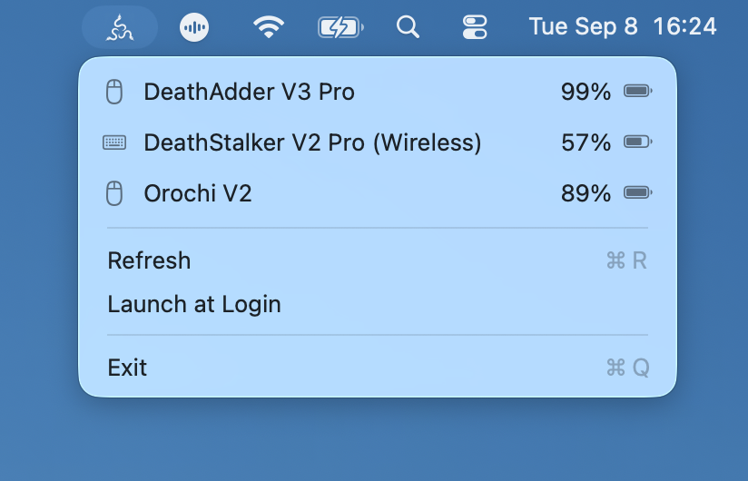

Battery status in the menu bar
See battery levels for compatible wireless Razer mice and keyboards connected through HyperSpeed, USB receivers, or Bluetooth.
Razer battery monitor for macOS
RazerMon is a simple menu bar app that shows the battery percentage of compatible wireless Razer mice and keyboards—without Razer Synapse.
Free and open source · macOS 13+ · Apple silicon

Features
See battery levels for compatible wireless Razer mice and keyboards connected through HyperSpeed, USB receivers, or Bluetooth.
RazerMon uses read-only battery queries. It does not change DPI, lighting, profiles, macros, pairing, or key bindings.
Check your devices in one place and avoid an unexpected low battery while working or playing.
Install
brew install --cask ab4317/tap/razermon
Search and support
Install RazerMon in Applications, launch it, and grant Input Monitoring permission. Compatible device battery levels then appear in the macOS menu bar.
No. It communicates through macOS HID APIs and requires no Synapse installation, kernel extension, or additional driver.
macOS protects access to keyboard and mouse HID devices. The permission lets RazerMon send read-only battery queries. It does not record keystrokes or pointer activity.
No. RazerMon does not modify lighting, DPI, polling rate, pairing, profiles, macros, or key bindings.
Check the supported device list or open a compatibility issue with the product name, connection mode, and USB product ID. Do not include a serial number.